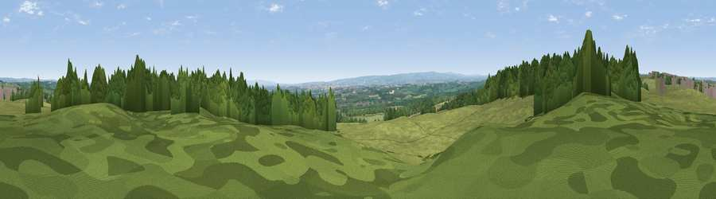

Viewpoint near Cockfield
#27887 in England · top 72% of its area beats it · near Cockfield · path 148 mWhere it is
The exact computed spot (NZ 12475 23275). Click the marker for map links.
Public access: the nearest public right of way is about 148 m away — the final stretch may cross private land. Computed from Natural England's CRoW access layer and OpenStreetMap rights of way — not the legal definitive map. Always verify locally.
The view, rendered

A 360° render of this exact spot computed from the terrain model, tree cover and land cover — summer colours, afternoon light, calibrated against photographs of famous viewpoints. Real trees, hedges and buildings will differ in detail.
The panorama
Grey silhouette: terrain skyline in each direction (720 bearings, Earth curvature and refraction included). Dashed green: skyline with trees (+15 m) and buildings (+8 m) as obstacles. Blue strip: how far the ground is visible on each bearing.
Where the view opens
Wedge length = distance to the farthest visible ground on that bearing (vegetation-aware). Rings at 10, 25 and 50 km.
What fills the view
57% grassland · 28% woodland · 13% cropland · 2% built-up
Angular shares of the visible panorama (visual magnitude), not map area. Landscape diversity 0.45 (0–1 Shannon).
Key numbers
More beautiful places nearby
The staircase of upgrades: each row has a higher view potential than everything closer. Driving times are estimates from straight-line distance, calibrated against real road routing — check an actual route before setting out.
| Place | Direction | Drive | Score |
|---|---|---|---|
| Viewpoint near Cockfield | W · 2 km | ~6 min | 43.5 |
| Viewpoint near Copley | WNW · 4 km | ~9 min | 60.2 |
| Viewpoint near Whorlton | S · 7 km | ~14 min | 64.1 |
| Viewpoint near St Helen Auckland | ENE · 8 km | ~16 min | 70.3 |
| Viewpoint near Eggleston | W · 11 km | ~21 min | 76.0 |
| Pontop Pike | N · 30 km | ~47 min | 77.8 |
| Viewpoint near Ingleby Cross | SE · 41 km | ~60 min | 82.4 |
| Beacon Hill | SE · 41 km | ~60 min | 84.7 |
54.60449, -1.80840 · source: screening · position refined by local search. Computed location — check access rights before visiting.